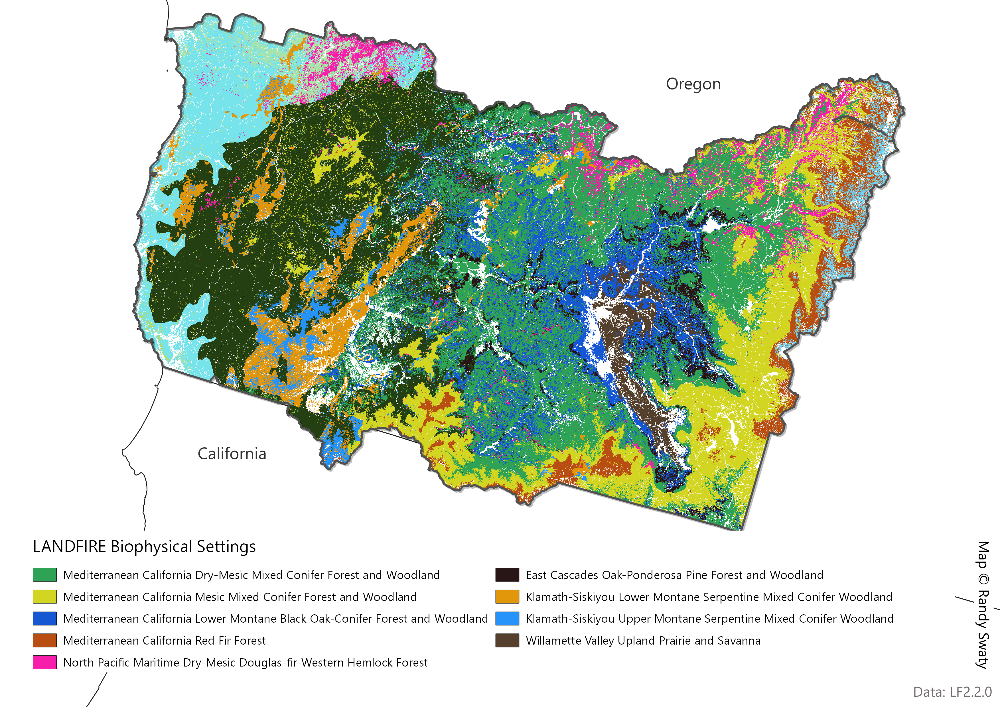
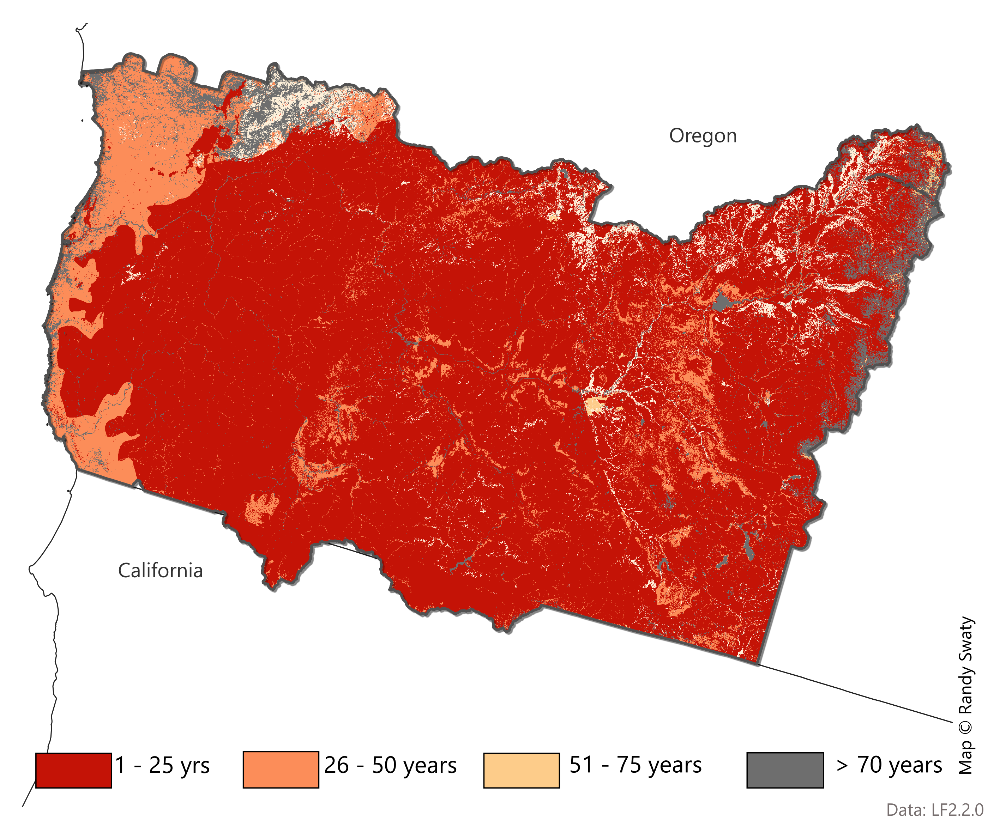

Past: Historical Ecosystems
LANDFIRE’s Biophysical Settings (BpSs)
BpS models represent the vegetation system that may have been dominant on the landscape prior to Euro-American settlement. These models are based on a combination of the current environment and an approximation of the historical disturbance regime. Read more.
Check out this 3-minute tutorial for a quick refresher on the basics of Biophysical Settings Models.
Use this page as a starting point to explore the most prevalent BpSs for your analysis area. In addition to the charts and maps, the historical disturbance data can be directly accessed using this site.
Most Prevalent Biophysical Settings

Historic Annual Acres Burned (per ecosystem)

Top Historical Fire Regimes

Historical Disturbances (per ecosystem, 10 most burned BpSs selected)
Data Table
| ZONE | BPS_MODEL | BPS_NAME | GROUPVEG | FRI_REPLAC | FRI_MIXED | FRI_SURFAC | FRG_NEW | ACRES | REL_PERCENT |
|---|---|---|---|---|---|---|---|---|---|
| 2 | 10431_2_3_6_7 | Mediterranean California Mixed Evergreen Forest-Interior | Conifer | 165 | 46 | 23 | I-B | 878,748 | 20.1 |
| 2 | 10270_2_3_7 | Mediterranean California Dry-Mesic Mixed Conifer Forest and Woodland | Conifer | 337 | 32 | 12 | I-B | 516,677 | 11.8 |
| 7 | 10270_2_3_7 | Mediterranean California Dry-Mesic Mixed Conifer Forest and Woodland | Conifer | 337 | 32 | 12 | I-B | 421,540 | 9.6 |
| 7 | 10280_4_6_7_12 | Mediterranean California Mesic Mixed Conifer Forest and Woodland | Conifer | 148 | 46 | 33 | I-C | 375,216 | 8.6 |
| 2 | 10432_2_3 | Mediterranean California Mixed Evergreen Forest-Coastal | Conifer | 221 | 60 | 252 | III-A | 283,865 | 6.5 |
| 2 | 10300_2_3_4_5_6_7 | Mediterranean California Lower Montane Black Oak-Conifer Forest and Woodland | Conifer | 176 | 38 | 15 | I-B | 243,505 | 5.6 |
| 2 | 10210_2_3_6_7 | Klamath-Siskiyou Lower Montane Serpentine Mixed Conifer Woodland | Conifer | 229 | 70 | 11 | I-B | 201,621 | 4.6 |
| 2 | 10280_2_3 | Mediterranean California Mesic Mixed Conifer Forest and Woodland | Conifer | 237 | 47 | 25 | I-B | 184,013 | 4.2 |
| 7 | 10300_2_3_4_5_6_7 | Mediterranean California Lower Montane Black Oak-Conifer Forest and Woodland | Conifer | 176 | 38 | 15 | I-B | 125,283 | 2.9 |
| 7 | 10320_2_3_7 | Mediterranean California Red Fir Forest | Conifer | 189 | 58 | 58 | I-C | 121,455 | 2.8 |
| 7 | 10370_1_2_7 | North Pacific Maritime Dry-Mesic Douglas-fir-Western Hemlock Forest | Conifer | 336 | 105 | NA | III-A | 82,854 | 1.9 |
| 7 | 10600_1_2_7 | East Cascades Oak-Ponderosa Pine Forest and Woodland | Conifer | 383 | 644 | 31 | I-C | 77,353 | 1.8 |
| 2 | 10390_1_2_3_7 | North Pacific Maritime Mesic-Wet Douglas-fir-Western Hemlock Forest | Conifer | 404 | NA | NA | V-A | 72,429 | 1.7 |
| 7 | 11200_1_2_7 | Willamette Valley Upland Prairie and Savanna | Hardwood | 288 | 50 | 13 | I-B | 73,622 | 1.7 |
| 2 | 10220_2_3_6_7 | Klamath-Siskiyou Upper Montane Serpentine Mixed Conifer Woodland | Conifer | 231 | 70 | 11 | I-B | 65,035 | 1.5 |
| 7 | 10412_1_7 | North Pacific Mountain Hemlock Forest-Xeric | Conifer | 294 | 615 | 1,001 | III-B | 60,461 | 1.4 |
| 2 | 10370_1_2_7 | North Pacific Maritime Dry-Mesic Douglas-fir-Western Hemlock Forest | Conifer | 336 | 105 | NA | III-A | 57,781 | 1.3 |
| 2 | 10350_1_2_7 | North Pacific Dry Douglas-fir(-Madrone) Forest and Woodland | Conifer | 367 | 70 | 90 | I-C | 44,533 | 1.0 |
| 3 | 10280_2_3 | Mediterranean California Mesic Mixed Conifer Forest and Woodland | Conifer | 237 | 47 | 25 | I-B | 40,046 | 0.9 |
| 2 | 10320_2_3_7 | Mediterranean California Red Fir Forest | Conifer | 189 | 58 | 58 | I-C | 31,024 | 0.7 |
| 2 | 11520_2_3_7 | California Montane Riparian Systems | Riparian | 64 | 79 | NA | I-C | 30,554 | 0.7 |
| NA | NA | Open Water | Open Water | NA | NA | NA | NA | 24,093 | 0.6 |
| 2 | 10600_1_2_7 | East Cascades Oak-Ponderosa Pine Forest and Woodland | Conifer | 383 | 644 | 31 | I-C | 27,809 | 0.6 |
| 7 | 11540_1_7_8_9 | Inter-Mountain Basins Montane Riparian Systems | Riparian | 99 | NA | NA | IV-A | 24,453 | 0.6 |
| 2 | 10310_2_3_4_5_6_12 | California Montane Jeffrey Pine(-Ponderosa Pine) Woodland | Conifer | 165 | 84 | 11 | I-B | 20,558 | 0.5 |
| 7 | 11520_2_3_7 | California Montane Riparian Systems | Riparian | 64 | 79 | NA | I-C | 20,749 | 0.5 |
| 3 | 10431_2_3_6_7 | Mediterranean California Mixed Evergreen Forest-Interior | Conifer | 165 | 46 | 23 | I-B | 21,239 | 0.5 |
| 3 | 10270_2_3_7 | Mediterranean California Dry-Mesic Mixed Conifer Forest and Woodland | Conifer | 337 | 32 | 12 | I-B | 16,978 | 0.4 |
| 2 | 10290_2_3_4_5_6_7_12 | Mediterranean California Mixed Oak Woodland | Hardwood | 285 | 33 | 11 | I-B | 15,303 | 0.4 |
| 2 | 10360_1_2 | North Pacific Hypermaritime Sitka Spruce Forest | Conifer | 657 | NA | NA | V-B | 16,720 | 0.4 |
| 2 | 11700_2_3_7 | Klamath-Siskiyou Xeromorphic Serpentine Savanna and Chaparral | Conifer | 201 | NA | 14 | I-B | 16,920 | 0.4 |
| 7 | 10290_2_3_4_5_6_7_12 | Mediterranean California Mixed Oak Woodland | Hardwood | 285 | 33 | 11 | I-B | 16,461 | 0.4 |
| 7 | 11582_1_2_7 | North Pacific Montane Riparian Woodland and Shrubland-Dry | Riparian | 465 | 233 | NA | III-B | 16,315 | 0.4 |
| 3 | 10220_2_3_6_7 | Klamath-Siskiyou Upper Montane Serpentine Mixed Conifer Woodland | Conifer | 231 | 70 | 11 | I-B | 12,582 | 0.3 |
| 3 | 10320_2_3_7 | Mediterranean California Red Fir Forest | Conifer | 189 | 58 | 58 | I-C | 13,629 | 0.3 |
| 2 | 11200_1_2_7 | Willamette Valley Upland Prairie and Savanna | Hardwood | 288 | 50 | 13 | I-B | 11,225 | 0.3 |
| NA | NA | Barren-Rock/Sand/Clay | Barren-Rock/Sand/Clay | NA | NA | NA | NA | 10,688 | 0.2 |
| 2 | 10150_2_3_4 | California Coastal Redwood Forest | Conifer | 408 | NA | 32 | I-C | 8,962 | 0.2 |
| 2 | 11560_1_2_7 | North Pacific Lowland Riparian Forest and Shrubland | Riparian | 749 | NA | NA | V-B | 9,139 | 0.2 |
| 7 | 10980_7 | California Montane Woodland and Chaparral | Shrubland | 49 | 197 | 234 | II-C | 7,579 | 0.2 |
| 7 | 11670_1_7_9 | Rocky Mountain Poor-Site Lodgepole Pine Forest | Conifer | 111 | 113 | NA | III-A | 8,055 | 0.2 |
| 7 | 11740_1_7 | North Pacific Dry-Mesic Silver Fir-Western Hemlock-Douglas-fir Forest | Conifer | 334 | 308 | NA | III-B | 7,350 | 0.2 |
| 3 | 10210_2_3_6_7 | Klamath-Siskiyou Lower Montane Serpentine Mixed Conifer Woodland | Conifer | 229 | 70 | 11 | I-B | 3,714 | 0.1 |
| 3 | 10980_3 | California Montane Woodland and Chaparral | Shrubland | 94 | 54 | NA | I-C | 3,416 | 0.1 |
| 2 | 11570_1_2 | North Pacific Swamp Systems | Riparian | NA | NA | NA | NA | 4,747 | 0.1 |
| 2 | 11581_1_2_7 | North Pacific Montane Riparian Woodland and Shrubland-Wet | Riparian | 1,888 | 1,598 | NA | V-B | 2,699 | 0.1 |
| 2 | 11582_1_2_7 | North Pacific Montane Riparian Woodland and Shrubland-Dry | Riparian | 465 | 233 | NA | III-B | 4,576 | 0.1 |
| 7 | 10170_6_7_8_9_12_18 | Columbia Plateau Western Juniper Woodland and Savanna | Conifer | 445 | 272 | NA | III-B | 4,248 | 0.1 |
| 7 | 10180_1_7 | East Cascades Mesic Montane Mixed-Conifer Forest and Woodland | Conifer | 253 | 129 | 276 | III-A | 3,045 | 0.1 |
| 7 | 10210_2_3_6_7 | Klamath-Siskiyou Lower Montane Serpentine Mixed Conifer Woodland | Conifer | 229 | 70 | 11 | I-B | 5,199 | 0.1 |
| 7 | 11050_3_6_7 | Northern and Central California Dry-Mesic Chaparral | Shrubland | 74 | NA | NA | IV-A | 4,038 | 0.1 |
| 2 | 10020 | Mediterranean California Sparsely Vegetated Systems | Sparse | NA | NA | NA | NA | 64 | 0.0 |
| 3 | 10290_2_3_4_5_6_7_12 | Mediterranean California Mixed Oak Woodland | Hardwood | 285 | 33 | 11 | I-B | 1 | 0.0 |
| 3 | 10300_2_3_4_5_6_7 | Mediterranean California Lower Montane Black Oak-Conifer Forest and Woodland | Conifer | 176 | 38 | 15 | I-B | 6 | 0.0 |
| 3 | 10310_2_3_4_5_6_12 | California Montane Jeffrey Pine(-Ponderosa Pine) Woodland | Conifer | 165 | 84 | 11 | I-B | 14 | 0.0 |
| 3 | 10390_1_2_3_7 | North Pacific Maritime Mesic-Wet Douglas-fir-Western Hemlock Forest | Conifer | 404 | NA | NA | V-A | 96 | 0.0 |
| 3 | 10440_3_6_7 | Northern California Mesic Subalpine Woodland | Conifer | 504 | 929 | NA | V-A | 1,090 | 0.0 |
| 3 | 10970_3_6_7 | California Mesic Chaparral | Shrubland | 54 | NA | NA | IV-A | 20 | 0.0 |
| 3 | 11050_3_6_7 | Northern and Central California Dry-Mesic Chaparral | Shrubland | 74 | NA | NA | IV-A | 32 | 0.0 |
| 3 | 11380_3_5 | North Pacific Montane Grassland | Grassland | 64 | NA | NA | IV-A | 50 | 0.0 |
| 3 | 11520_2_3_7 | California Montane Riparian Systems | Riparian | 64 | 79 | NA | I-C | 1,495 | 0.0 |
| 3 | 11700_2_3_7 | Klamath-Siskiyou Xeromorphic Serpentine Savanna and Chaparral | Conifer | 201 | NA | 14 | I-B | 2 | 0.0 |
| 2 | 10080_1_2_3_7 | North Pacific Oak Woodland | Hardwood | 293 | 37 | 14 | I-B | 715 | 0.0 |
| 2 | 10630_2_7 | North Pacific Broadleaf Landslide Forest and Shrubland | Hardwood | 100 | 498 | NA | IV-A | 2 | 0.0 |
| 2 | 11280_2_3_4 | Northern California Coastal Scrub | Shrubland | 110 | NA | NA | IV-B | 84 | 0.0 |
| 2 | 11310_2_3_4 | California Northern Coastal Grassland | Grassland | 2 | NA | NA | II-A | 793 | 0.0 |
| 2 | 11780_1_2_7 | North Pacific Hypermaritime Western Red-cedar-Western Hemlock Forest | Conifer | NA | NA | NA | NA | 1,669 | 0.0 |
| 7 | 10010 | Inter-Mountain Basins Sparsely Vegetated Systems | Sparse | NA | NA | NA | NA | 57 | 0.0 |
| 7 | 10020 | Mediterranean California Sparsely Vegetated Systems | Sparse | NA | NA | NA | NA | 53 | 0.0 |
| 7 | 10030 | North Pacific Sparsely Vegetated Systems | Sparse | NA | NA | NA | NA | 3 | 0.0 |
| 7 | 10080_1_2_3_7 | North Pacific Oak Woodland | Hardwood | 293 | 37 | 14 | I-B | 41 | 0.0 |
| 7 | 10110_7 | Rocky Mountain Aspen Forest and Woodland | Hardwood | 125 | 100 | NA | III-A | 40 | 0.0 |
| 7 | 10220_2_3_6_7 | Klamath-Siskiyou Upper Montane Serpentine Mixed Conifer Woodland | Conifer | 231 | 70 | 11 | I-B | 1,381 | 0.0 |
| 7 | 10310_7 | California Montane Jeffrey Pine(-Ponderosa Pine) Woodland | Conifer | 200 | 118 | 26 | I-C | 2,089 | 0.0 |
| 7 | 10330_3_6_7 | Mediterranean California Subalpine Woodland | Conifer | 475 | 566 | NA | V-A | 1 | 0.0 |
| 7 | 10350_1_2_7 | North Pacific Dry Douglas-fir(-Madrone) Forest and Woodland | Conifer | 367 | 70 | 90 | I-C | 968 | 0.0 |
| 7 | 10380_1_7 | North Pacific Maritime Mesic Subalpine Parkland | Conifer | 5,183 | NA | NA | V-B | 64 | 0.0 |
| 7 | 10390_1_2_3_7 | North Pacific Maritime Mesic-Wet Douglas-fir-Western Hemlock Forest | Conifer | 404 | NA | NA | V-A | 1,253 | 0.0 |
| 7 | 10420_1_7 | North Pacific Mesic Western Hemlock-Silver Fir Forest | Conifer | 3,606 | 1,742 | NA | V-B | 59 | 0.0 |
| 7 | 10431_2_3_6_7 | Mediterranean California Mixed Evergreen Forest-Interior | Conifer | 165 | 46 | 23 | I-B | 796 | 0.0 |
| 7 | 10440_3_6_7 | Northern California Mesic Subalpine Woodland | Conifer | 504 | 929 | NA | V-A | 346 | 0.0 |
| 7 | 10450_1_7_8_9 | Northern Rocky Mountain Dry-Mesic Montane Mixed Conifer Forest | Conifer | 184 | 107 | 32 | I-C | 227 | 0.0 |
| 7 | 10460_1_7_9 | Northern Rocky Mountain Subalpine Woodland and Parkland | Conifer | 345 | 79 | NA | III-A | 57 | 0.0 |
| 7 | 10531_1_7_8_9 | Northern Rocky Mountain Ponderosa Pine Woodland and Savanna-Mesic | Conifer | 273 | 78 | 19 | I-B | 1,032 | 0.0 |
| 7 | 10532_7_9 | Northern Rocky Mountain Ponderosa Pine Woodland and Savanna-Xeric | Conifer | 258 | 100 | 136 | III-A | 8 | 0.0 |
| 7 | 10560_1_7_8_9 | Rocky Mountain Subalpine Mesic-Wet Spruce-Fir Forest and Woodland | Conifer | 120 | 415 | NA | III-A | 252 | 0.0 |
| 7 | 10580_7 | Sierra Nevada Subalpine Lodgepole Pine Forest and Woodland | Conifer | 91 | NA | 650 | IV-A | 89 | 0.0 |
| 7 | 10620_7_9 | Inter-Mountain Basins Curl-leaf Mountain Mahogany Woodland and Shrubland | Shrubland | 243 | 213 | 244 | III-A | 1,427 | 0.0 |
| 7 | 10630_2_7 | North Pacific Broadleaf Landslide Forest and Shrubland | Hardwood | 100 | 498 | NA | IV-A | 11 | 0.0 |
| 7 | 10680_1_7 | North Pacific Dry and Mesic Alpine Dwarf-Shrubland or Fell-field or Meadow | Shrubland | NA | NA | NA | NA | 264 | 0.0 |
| 7 | 10800_1_7_8_9 | Inter-Mountain Basins Big Sagebrush Shrubland | Shrubland | 101 | NA | NA | IV-B | 585 | 0.0 |
| 7 | 10970_3_6_7 | California Mesic Chaparral | Shrubland | 54 | NA | NA | IV-A | 17 | 0.0 |
| 7 | 11230_1_7_8_9 | Columbia Plateau Steppe and Grassland | Grassland | 39 | NA | NA | IV-A | 6 | 0.0 |
| 7 | 11240_1_7_8_9 | Columbia Plateau Low Sagebrush Steppe | Shrubland | 222 | NA | NA | V-A | 27 | 0.0 |
| 7 | 11250_1_7_8_9_10_19 | Inter-Mountain Basins Big Sagebrush Steppe | Shrubland | 59 | NA | NA | IV-A | 80 | 0.0 |
| 7 | 11260_1_7_8_9_10_19 | Inter-Mountain Basins Montane Sagebrush Steppe | Shrubland | 31 | NA | NA | II-C | 81 | 0.0 |
| 7 | 11530_7_8_9 | Inter-Mountain Basins Greasewood Flat | Shrubland | 1,019 | NA | NA | V-B | 13 | 0.0 |
| 7 | 11560_1_2_7 | North Pacific Lowland Riparian Forest and Shrubland | Riparian | 749 | NA | NA | V-B | 95 | 0.0 |
| 7 | 11581_1_2_7 | North Pacific Montane Riparian Woodland and Shrubland-Wet | Riparian | 1,888 | 1,598 | NA | V-B | 506 | 0.0 |
| 7 | 11650_1_7_8 | Northern Rocky Mountain Foothill Conifer Wooded Steppe | Conifer | 124 | 397 | 126 | III-A | 89 | 0.0 |
| 7 | 11700_2_3_7 | Klamath-Siskiyou Xeromorphic Serpentine Savanna and Chaparral | Conifer | 201 | NA | 14 | I-B | 160 | 0.0 |
| 7 | 11710_7 | North Pacific Alpine and Subalpine Dry Grassland | Grassland | 203 | NA | NA | V-A | 12 | 0.0 |
| 7 | 11720_7 | Sierran-Intermontane Desert Western White Pine-White Fir Woodland | Conifer | 202 | 65 | 45 | I-C | 862 | 0.0 |
| 7 | 11730_1_7 | North Pacific Wooded Volcanic Flowage | Conifer | 497 | NA | NA | V-A | 154 | 0.0 |